Hi, future artist! We’re thrilled you’re here!
Welcome to the Ultimate Coloring Tutorial for Your Adult Coloring Books created by Tio Diego and friends. This comprehensive guide is designed to help you discover your inner artist, with lessons for beginners, intermediates, and advanced colorists. You’ll learn everything from basic color fundamentals and layering to professional techniques like impressionism and 3D illusions. Master blending colors, removing outlines for realism, and creating textures that pop off the page. You don’t need a bunch of YouTube videos and tons of blog posts. This tutorial has everything you need.
Each step builds on the last, transforming your hobby into true artistry. Get ready to unlock hidden skills and create masterpieces!
Part 1 of 5
THE BASICS
Why Is Coloring Good for You?
You spent countless hours coloring the books your parents gave you as a child to keep you busy, and it was unthinkable that coloring would be a hobby or a mindfulness practice you would want to pick up as an adult, but here you are! Why? Because adult coloring is a healthy hobby.
Coloring is a form of dynamic meditation and an artistic way to clear the mind. We’re taking it a step further and helping you develop useful, real artistic skills and learning the fundamentals of visual arts as you learn to color your coloring book, but before we get into coloring techniques that will help you discover your inner artist, let’s look at some benefits of adult coloring books.
ADULT COLORING REDUCES STRESS AND ANXIETY
The stressful lifestyle many of us lead does not easily give us the opportunity to take a moment to relax—we have to make it happen.
We are bombarded with millions of pieces of information every day. It can be too much for our brains. On top of that, the average person has around 60,000 thoughts per day, with 75% of them being negative and 95% being repetitive. We need an escape, a release, one that’s not just adding more things to our brains, like with TV shows, movies and YouTube videos.
Coloring can be that outlet to help you turn those thoughts into art and adult coloring books are an easy gateway to get started in the visual arts.
Coloring books will put your mind at rest after a long day at work. Coloring evokes the same state of mindfulness as meditation. Studies have shown that focusing on the complex structure of your coloring page can help put your mind into a meditative state. The meditative state occurs when you stop focusing on future or past worries and only focus on the present. In other words, coloring books can help calm the anxiety of a restless mind!
If you’re dealing with stress or anxiety, or just had a bad day, take a page from your favorite coloring book and put some color in it. Adult coloring books release stress.
ADULT COLORING IMPROVES FOCUS
Coloring encourages you to pay attention to the details—it’s a key therapeutic benefit of adult coloring books. To color a page successfully, you must concentrate on small areas and work through many lines.
While you are relaxing and having fun, you are exercising your concentration. Whether at work or at school, the benefits of coloring will be reflected in the quality of your work. How about that!
As we age, some of us may disconnect from our creative flair. Work, responsibilities, routine, you know, life “gets in the way.” When you try to figure out how to color inside the lines or which colors go together, you are exercising the creative side of your brain. Guess what? Creativity begets more creativity.
Interestingly, through coloring, you also engage the other half of your brain, enhancing focus, concentration, and organization. As a result, adult coloring books exercise your entire brain. This could be enough to help you think outside of the box while solving problems in other areas of your life. Cool uh?
Adult Coloring Connects You to Your Inner Child
And the most important reason why adult coloring books are good for you? You get to feel like a kid again! During childhood, we enjoy the simple things, right? Remember how easy it was to laugh about anything? Coloring is as easy as it gets.
Go back to the good ol’ days when you didn’t have anything to worry about.
Adult coloring books are a fun way to relive childhood memories and pamper your inner child.
Some of the artists in our books
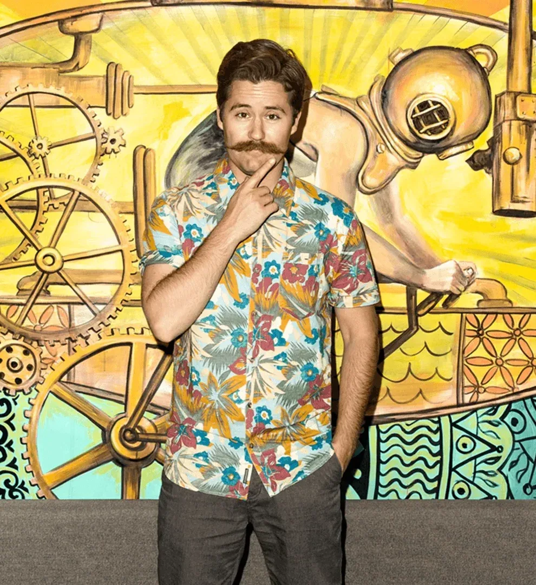
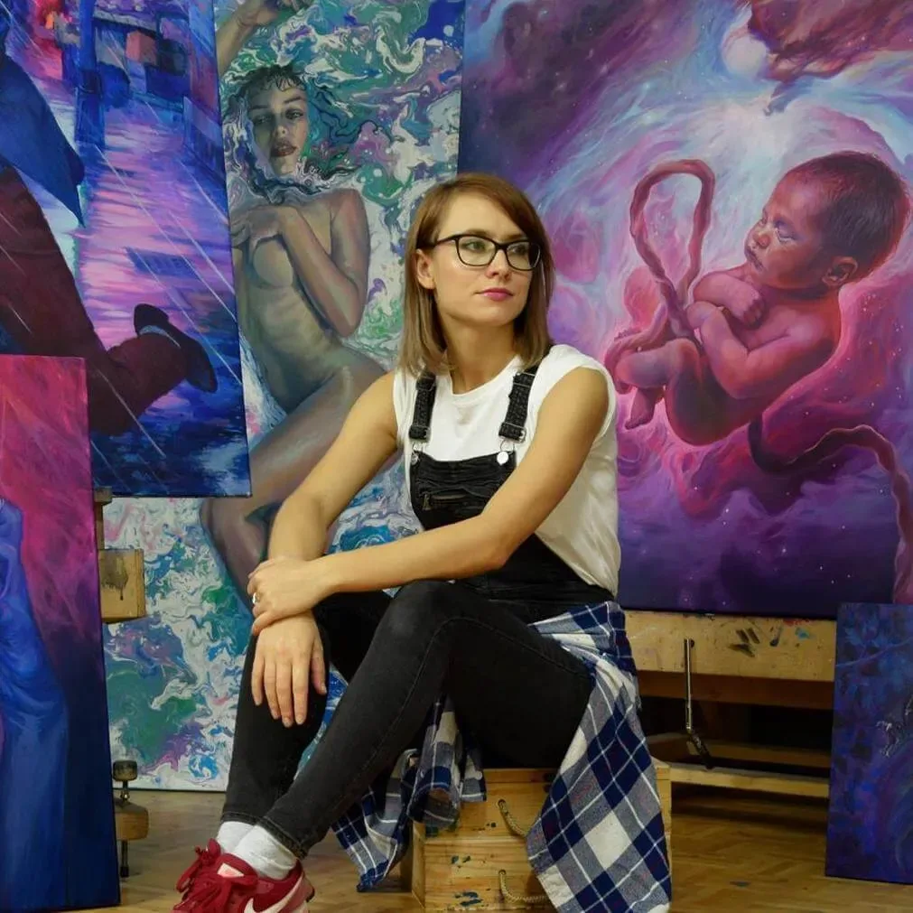
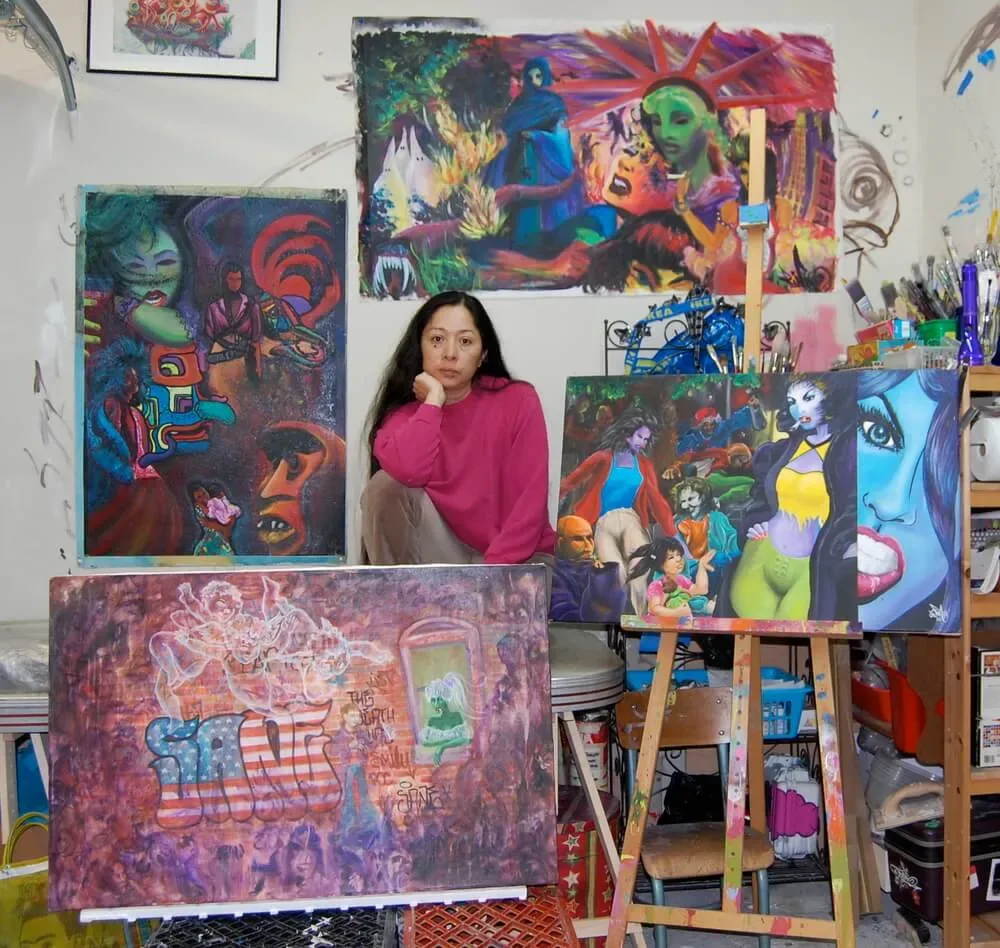
And over hundreds more of the best artists in the world
12 Tips for a Great Coloring Experience
Now you know the multiple benefits of adult coloring books for your health and mind, let’s go over some tips for a great coloring experience:
1. Practice is key. You know how the saying goes: “The more you do it, the better you’ll get at it.”
2. Start from the outside and work your way inward. You’re more likely to run over lines if you go the other way.
3. Don’t press too hard. It’s easier to layer and blend colors when you use the right amount of pressure. If you press too hard, you’ll often break the tips of your pencils and end up with hand fatigue.
4. Sharpen your pencils. You will have more control over the pressure if you keep your pencils and crayons sharp.
You’ll also need them sharp for detailed areas.
5. Keep the caps on your markers and store them in a flat, horizontal position. Ink flows unevenly down in one direction when stored upright, and that can dry out or oversaturate the nib. Avoid dropping your colored pencils too often; it can break the core, which could lead to broken tips every time you sharpen them. Nothing more frustrating than that, right? Take care of your tools to make them last longer.
6. Test your colors on a separate piece of paper first to ensure you have the color you want. Colors can look different on paper than on a pencil or marker. You should also check to see if the markers bleed.
7. Buying coloring books for adults made from quality paper makes a world of difference when it comes to your coloring results and experience. You will find out more about paper quality in this tutorial.
8. Use fixative spray. Some colors might bleed onto the other pages of the book when closed. It’s better to be safe.
Plus, the varnish will protect your artwork too.
9. Take your time. Coloring an entire page can take time. If you rush, you may not be satisfied with the results.
Instead, relax and enjoy the process. If you get bored, put it off for another time or try another page. (This book has simple and complex designs so that you can enjoy both.)
10. Get inspired. There are many possibilities for coloring. You can find many examples online and see how others colored the same page. (Follow our Instagram account for that.) You can steal a few tricks you like, too. Remember not to compare yourself to others.
11. You don’t have to follow the rules. The whole point of coloring is to have fun and relax. It’s okay to go with the flow, too. You can’t mess up—and if you feel like you did, just turn the page!
12. Share your work. We’d love to see how you’ve done! You can find a big community of coloring book lovers who will find your approach interesting. Tag @BoundlessBacker to get featured in our feeds.
How to Buy a Good Coloring Book
With the adult coloring book market now valued at over $100 million annually, finding a quality book that delivers a truly satisfying experience can be challenging. The market is flooded with options ranging from premium artist-quality publications to mass-produced books with disappointing paper quality. Here’s what to look for when investing in your next coloring book.
THEME & DESIGN
The most successful adult coloring books typically focus on specific themes that resonate with their audience.
According to industry data and reader reviews, nature-based themes dominate the market. The top-selling books include:
1. Johanna Basford’s Nature Series– Including Secret Garden (Amazon US), Enchanted Forest (Amazon US), and
Lost Ocean (Amazon US). These books feature intricate botanical and oceanic designs with hidden elements throughout.
2. Millie Marotta’s Animal Kingdom (Amazon US) – Known for detailed wildlife illustrations with repetitive patterns perfect for meditative coloring.
3. Hanna Karlzon’s Daydreams (Amazon US) – Features whimsical, fairy-tale-inspired designs with Swedish artistic sensibilities.
While these nature and fantasy themes are undeniably popular, they can become repetitive for regular colorists.
This is where The Ultimate Street Art Coloring Book (our product page) stands apart—it features over 100 different artists, each with their unique style. From geometric graffiti to photorealistic portraits, abstract murals to cartoon characters, the variety ensures you’ll never experience the monotony common in single-artist books.
PAPER QUALITY
Paper quality is arguably the most critical factor in coloring book satisfaction. Industry standards recommend:
- Weight: Minimum 150 gsm for colored pencils, 200+ gsm for markers and watercolors
- Opacity: 90% or higher to prevent bleed-through
- Texture: Slightly toothy surface for pencil grip, smooth for markers
Many mass-market books use 70-90 gsm paper, which buckles under watercolor and allows marker bleeding.
Premium books like those from Swedish publishers (Hanna Karlzon, Maria Trolle) use 150-180 gsm paper with excellent tooth for colored pencils.
The Ultimate Street Art Coloring Book uses 200 gsm woodfree paper—thicker than most competitors—ensuring compatibility with all mediums including markers, watercolors, and mixed media techniques.
BOOK CONSTRUCTION
Binding Types:
- Perfect Binding (glued spine): Most economical but pages can fall out with heavy use
- Sewn Binding: More durable, allows book to lay flat
- Spiral Binding: Best for portability and ease of use, but less aesthetically pleasing on a shelf
Cover Options:
- Softcover/Paperback: Typically $8-15, lightweight and portable
- Hardcover: Usually $15-40, provides better protection and shelf appeal
Most popular books, such as Basford’s series, come in both formats, with hardcovers making excellent gifts or keepsakes. The Ultimate Street Art Coloring Book also offers two editions: a premium paperback ideal for traveling, and a 10″ x 10″ oversized hardcover. The limited print hardcover features embossed details and durable construction, making it equally suited as a coffee table art book or coloring canvas.
DETACHABLE PAGES
A feature often overlooked but highly valued by serious colorists is perforated pages. According to colorist forums and reviews, the inability to remove and display finished work is a major frustration. While Secret Garden and similar books require you to tear or cut pages (potentially damaging the spine), The Ultimate Street Art Coloring Book features cleanly perforated pages designed for easy removal and framing.
COMPLEXITY LEVELS
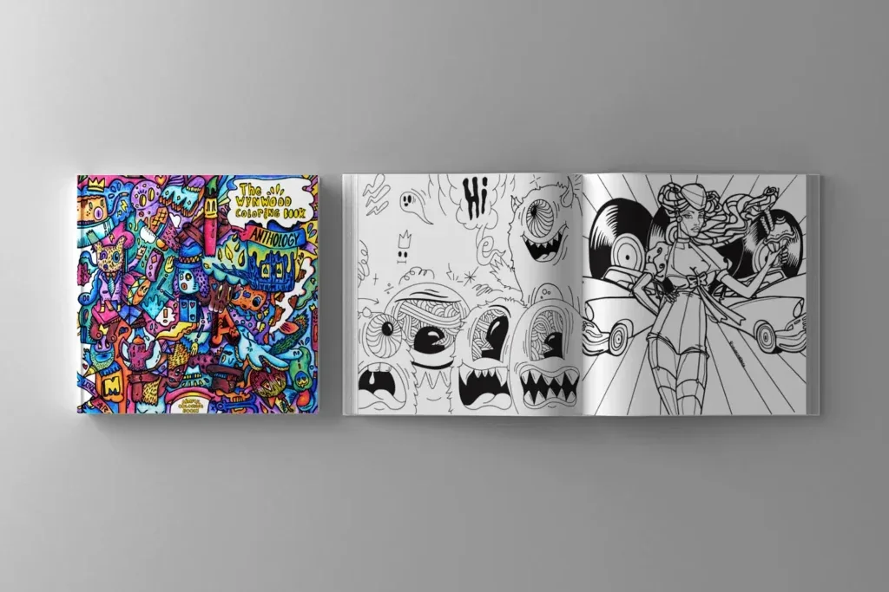
Colorists fall into three main categories:
Beginners (5-15 minutes per page): Prefer simple, larger designs with clear boundaries
Intermediate (30-60 minutes per page): Enjoy moderate detail with varied pattern sizes
Advanced(2-10 hours per page): Seek intricate designs with tiny details and complex patterns
Books like Kerby Rosanes’ Mythomorphia series cater to advanced colorists with extremely detailed illustrations, while Leisl Adams’ Color Me Calm offers simpler mandala patterns for beginners.
The Ultimate Street Art Coloring Book uniquely offers all complexity levels within one book, as each artist contributes different styles—from minimalist line art to incredibly detailed photorealistic pieces.
MISSION AND SOCIAL IMPACT
While most coloring books are purely commercial ventures, some publishers integrate social missions. For instance, several indie publishers donate portions of proceeds to mental health charities, capitalizing on coloring’s proven stress-relief benefits.
Boundless Backer takes this further with their crowdfunding model that directly supports:
- Artists from underserved communities worldwide
- Art education workshops in developing regions
- Cultural exchange programs connecting artists globally
This means your purchase directly impacts artists’ lives rather than just corporate profits—a consideration increasingly important to conscious consumers.
MAKING YOUR CHOICE
The best coloring book ultimately depends on your personal preferences and coloring goals. If you enjoy consistency and mastering one artist’s style, single-artist books like Basford’s or Marotta’s work excellently. However, if you value variety, cultural diversity, and want your coloring experience to expand your artistic horizons while supporting a meaningful cause, The Ultimate Street Art Coloring Book offers an unmatched combination of quality, variety, and social impact.
Choosing the Right Coloring Tools
Wondering what medium to use? While colored pencils are the most common tool coloring book enthusiasts use, they’re definitely not the only option.
The global art supplies market is valued at nearly $20 billion a year—that’s a lot of choices! With thousands of products available, choosing can feel overwhelming. But here’s the thing—understanding what each medium does best is the key to getting the results you want (and having more fun in the process).
Some say you are what you eat. In coloring? You are what you color with. Colored pencils, markers, watercolors, even Sharpies—each creates its own unique look. Street artists, fine artists, muralists, and coloring book lovers all know this truth: the right medium can make or break your artwork.
Brand preferences vary. So does what’s available and affordable. And that’s perfectly okay! The best medium is the one you’ll actually use and enjoy.
Here’s what you need to know when choosing coloring tools for your book:
COLORED PENCILS
Colored pencils dominate the adult coloring market, with 78% of enthusiasts citing them as their primary medium according to the Craft & Hobby Association. Their popularity stems from three key advantages: precision control, layering capability, and portability.
They’re incredibly versatile—great for rendering art styles that are expressive, abstract, realistic, or highly detailed.
You can make blends that are so smooth they resemble oil paintings! Unlike other mediums, colored pencils can even be erased, so there’s less pressure to get it right the first time. With colored pencils, you don’t have to worry about making a mess. You can relax, color with minimal supplies or planning, and color wherever you are.
Types of Colored Pencils
Wax-Based Pencils
The most common type, containing 10-30% wax binder. Professional-grade pencils typically use softer wax formulations (15-20% content) for smoother application.
You’ll find both “student grade” and “artist grade” options. Artist-grade pencils have more pigment, which gives you richer colors; they’re usually softer, making them easier to blend. If your budget permits, we recommend investing in higher-quality materials—you’ll find it more enjoyable to color.
- Soft Core: Prismacolor Premier (Amazon) – 4mm soft wax core, ideal for blending and coverage
- Hard Core: Faber-Castell Polychromos (Amazon) – 3.8mm oil-enriched lead, excellent for detail work
Oil-Based Pencils
Containing 5-15% oil binder, these offer superior point retention and minimal wax bloom. The Faber-Castell Polychromos mentioned above is technically oil-based, offering the best of both worlds.
Water-Soluble Pencils
These contain water-soluble gum arabic binder. Derwent Inktense (Amazon) provides ink-like intensity when activated with water, unlike traditional watercolor pencils. Try using them on wet paper or dipping the tip of the pencil in water—this technique produces lovely soft strokes!
Recommended Colored Pencil Sets
- Budget: Dual Coloring Pencils, Baby! (Buy) – 6 dual-tip pencils (12 colors total) for just $10. Compact and travel-friendly.
- Mid-Range: Arteza Colored Pencils (Amazon) – 72 colors, soft core, excellent value at under $30
- Professional: Caran d’Ache Luminance (Amazon) – Museum-quality lightfastness, though at $300+ for 76 colors, they’re an investment.
MARKERS
Markers offer 3-5x faster coverage than colored pencils but require more skill to master. Their tips are great for precision coloring and outlining, but because markers are permanent and erasers don’t work, they can be intimidating if you’re unfamiliar with them.
The marker industry has evolved significantly too, with alcohol-based markers now dominating professional use.
Let’s look at some marker types and applications:
Water-Based Markers
- Drying time: 30-60 seconds
- Blending window: 10-15 seconds
- Paper penetration: Minimal with quality paper (180+ gsm)
Quality water-based markers don’t bleed through paper as much, making them excellent for coloring books.
However, they can leave streaks when colors are overlapped to create a solid fill.
Recommended: Tombow Dual Brush Pens (Amazon) – Water-based, dual tips, 96 colors available.
Alcohol-Based Markers
- Drying time: 3-5 seconds
- Blending window: 2-3 seconds
- Coverage: 40% more area than water-based
Alcohol-based markers blend more smoothly and give you more freedom in layering shades, tints, and gradients. The downside: they’re more likely to bleed through paper, so they’re not ideal for double-sided coloring books.
Recommended: Ohuhu Alcohol Markers (Amazon) – Excellent Copic alternative at 1/3 the price.
Think about the marker nibs (also called tips!)
Different tips offer different levels of precision:
- Bullet Tip – Most common type, effective for covering small areas
- Fine Point – Good for details and thin lines
- Brush Tip – Spreads ink smoothly with softer strokes, flexible like a brush (Recommended)
- Chisel/Broad Tip – Can cover larger areas quickly, allows for both thick and thin lines
Essential Marker Tips
- Test first: Have a separate piece of the same paper to test colors before applying
- Trust your eyes: Colors look different on paper than on the marker’s barrel
- Light to dark: Always color lightest shades first—you can’t go lighter once applied
- Plan ahead: Map out highlights and white areas in advance (you can’t erase!)
- Gentle pressure: Light pressure creates smoother color; pressing hard causes streaks
- Work quickly: Speed prevents streaking—if you go too slow, ink dries and forms lines
- Finish with pencils: Once done with markers, use colored pencils for final details
CRAYONS
Wondering why children love them? They are easy to apply and inexpensive. Plus, coloring with crayons could save up on your precious pencils or markers. Have a set on hand and use it to color the large areas. Plus, the boldness of a crayon color and the smooth, waxy application make coloring with them a relaxing experience.
Professional-grade crayons contain 15-20% more pigment than children’s versions. They excel at covering large areas quickly and creating unique textures.
Recommended: Crayola Signature Blend & Shade (Amazon) – Designed specifically for adult coloring with pointed tips and rich pigmentation.
Here are some tips for coloring with crayons:
- Choose a coloring book with heavier-weight paper; it will hold more pigments from the crayons.
- Color in one direction—you don’t want your page to look too scribbly.
- Use light colors first and then add darker ones on top.
- Use a sharpener. You can get those fine details from coloring—sharpeners are not only for pencils!
- Apply crayon as a base layer, then blend with odorless mineral spirits (not baby oil, which can yellow paper over time) for painterly effects. You will be able to soften all those hard edges and use crayons a little like a watercolor pencil. (More about that in this tutorial.)
WATERCOLORS
Many people shy away from watercolors because they fear it’s too complicated. Still, it’s easy and inexpensive to get started. All you need is paint, water, and a brush.
Watercolor requires an understanding of:
- Paper weight: Minimum 200 gsm (our books meet this standard)
- Pigment load: Professional paints contain 40-80% pure pigment
- Water control: 70/30 pigment-to-water ratio for optimal control
Recommended Starter Set: Winsor & Newton Cotman (Amazon) – Student grade with professional performance.
Essential Watercolor Tools
- Brushes: Size 6 round for general use, size 2 for details
- Masking Fluid: Winsor & Newton Art Masking Fluid (Amazon) for preserving white areas
- Water Containers: Two jars minimum – one for cleaning, one for clean water
Whether you want to use watercolors as your primary artistic medium or as a base for your colored pencils, the rewards of this somewhat unpredictable medium are huge.
Here are some tips to help you get started:
- The thicker paper, the better! We recommend using 200 gsm paper (like our books), but the thicker, the better.
- Mix only two colors at a time — Combining too many colors can result in a brown and muddy mess.
- Use a large jar and change the water frequently. Water becomes dirty quite fast.
- Use a light touch. The beauty of watercolor paint is in its transparency and brightness. Use less water on the brush for better color control but less transparency. For greater transparency, add more water. Find a balance that works for you.
- You can use a paper towel to remove excess color while it’s still wet and make the color lighter.
- Plan out white areas in advance. Avoid them carefully, or you can apply masking liquid over these areas to protect them. It dries into a rubber material you can easily rub out with your finger.
WHAT TO GET THEN?
Professional colorists increasingly combine mediums. Our research shows that more than half of colorists use two or more mediums per piece. Did you know that? Of course, markers and colored pencils are the most popular combination.
Try laying down a vibrant color foundation with markers and adding details and finishing touches with colored pencils. The results might change your perspective about mixing mediums!
So, what to get then? Our suggestion is to start easy, with our Dual Coloring Pencils, Baby! travel set, for instance, for versatility at an unbeatable price. The dual tips allow quick color transitions and the compact design means you can experiment anywhere. As you develop preferences, invest in specialized tools for specific effects.
Here’s an idea about costs:
- Beginner Budget: $10-30 for quality starter supplies
- Intermediate: $50-150 for expanded color range and medium variety
- Advanced: $300+ for professional-grade materials
All right, we’ve covered the basics and shared some simple but crucial tips with you. Let’s start exploring color theory now before we move on to the beginner techniques.
One lesson every month
DON'T LOSE THIS TUTORIAL
One coloring lesson a month to turn you into an artist in 12 short months*
Part 2 of 5
Color Fundamentals
Choosing the Right Colors
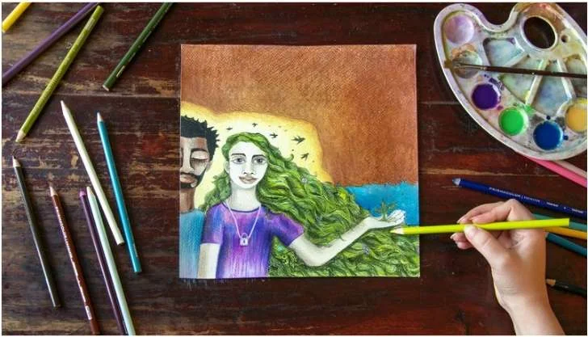
Let’s start with color fundamentals every artist needs to know. Let’s get to it, shall we?
THE COLOR WHEEL
The color wheel is a tool that helps you pick color combinations—or “color schemes”—that will look good together and harmonize—guaranteed.
Let’s take a look at the color wheel and learn how to use it in your adult coloring book:
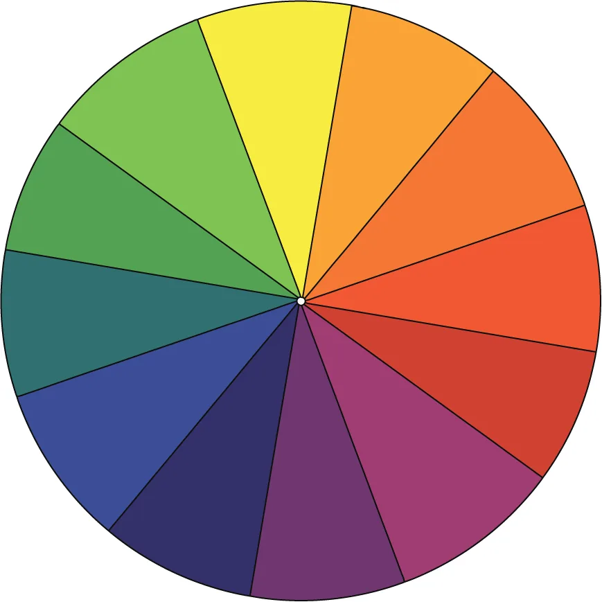
The basic color wheel consists of 12 colors.
The three primary colors are red (magenta), yellow and blue. They are called primary colors because they can’t be made with any combination of other colors. Conversely, all other colors are a combination of these three colors. Cool, uh?
That brings us to the secondary colors, which are also three: green, orange, and purple (violet). Secondary colors are made by mixing two primary colors. For example, red and yellow make orange.
Tertiary colors are made by combining a primary color with a secondary color. There are six: Yellow-Orange, Red-Orange, Red-Purple, Blue-Purple, Blue-Green, and Yellow-Green.
Artists and designers use the color wheel to select colors not only to create harmony but to communicate ideas, influence minds, and determine formulas. A designer trying to create a sense of energy and optimism will search for red, yellow, and orange hues in the color wheel.
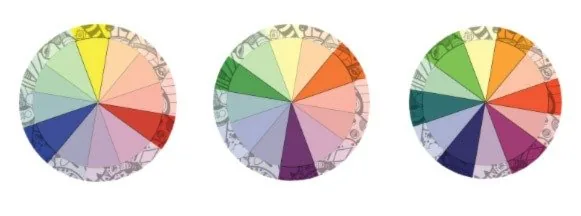
The Reality Check: When Theory Meets Practice
Here’s something fascinating: Did you know the traditional color wheel is actually quite wrong? It’s so off the mark that it doesn’t fully apply to real life because real-world colors are extremely muted compared to the vibrant color wheel we’ve been taught to use. French color theorist Florent Farges has revolutionized our understanding of practical color application. His work reveals that the colors we encounter in nature and everyday life exist in a much narrower, more muted range than the pure hues shown on traditional color wheels. This is why a sunset never quite matches the orange on your color wheel, and why that “perfect” blue sky is actually grayer than you think.
For coloring book enthusiasts, this means:
- Don’t be afraid to “muddy” your colors slightly—it often looks more realistic
- Pure, saturated colors work best as accents, not base colors
- Mixing a tiny bit of the complementary color into any hue creates more natural-looking results
Warm and Cool: The Temperature of Color
An excellent way to split the color wheel is by dividing it into two: warm and cold colors.
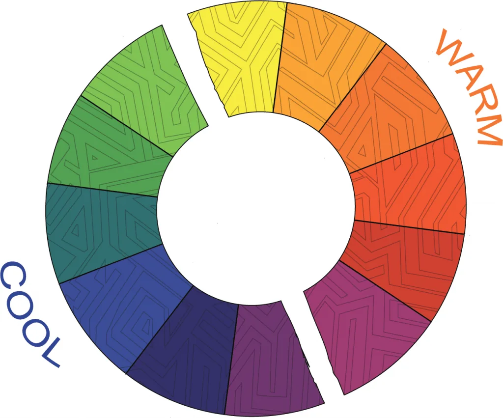
Colors that belong to the warm half of the color wheel are those from yellow to red-purple, as well as most varieties of browns. Warm colors usually represent energetic scenes and activities. They tend to make us think of warm things such as heat, fire, and sun. They invoke a sense of positivity, energy, and playfulness. Choose warm colors if you want certain areas of your coloring page to be prominent and draw attention.
Cool colors are located on the other half of the wheel, from yellow-green to purple, with most grays included too. Cool colors represent relaxing scenes and elements from nature, such as winter, oceans, sky, and water. Cool colors make you feel calm, relaxed and refreshed. You can make a specific area or object in your artwork blend into the background by using cool colors. Since cold colors lack warmth, we often use them for shadows instead of black.
Color Temperature in Practice
Consider how professional artists use temperature:
- Pixar animators use up to 70% cool colors in underwater scenes to create depth
- Renaissance painters added tiny amounts of blue to distant mountains (atmospheric perspective)
- Modern colorists often use the 70-20-10 rule: 70% dominant temperature, 20% secondary, 10% accent
Try this exercise: Take any page from your coloring book and designate it as either “warm dominant” or “cool dominant.” Stick to your chosen temperature for 70% of your coloring, using the opposite temperature sparingly for contrast. You’ll be amazed at how cohesive your final piece looks!
Street art book
The Ultimate Street Art Coloring Book
The Ultimate Street Art Coloring Book is designed to spark your creativity with the help of world-class muralists. The illustrations are bonafide black and white replicas of iconic murals from all around the globe. Legendary artists Kenny Scharf, Ron English, Lady Pink, D*Face, and one hundred other celebrated street artists provide an exciting coloring experience in 140 no-bleed through thick pages.
$25 – $50
Select options“I love this book! It makes me giggle and think. I bought another coloring book to work too, but this one… Oh man! This one is the holy grail!“
“This book!…my goodness!…where do I begin?…its just an all around MUST HAVE!…not your average coloring book but an incredible work of art”
Finding Harmony in Your Colors
Every artwork needs to find harmony, just like your coloring pages. What is harmony? Harmony is a pleasing or congruent arrangement of parts. When you see harmony, you immediately recognize it and lean towards it naturally.
That’s because our brains find it difficult to get stimulated by dull color combinations and have a hard time focusing on frenzied, chaotic color combinations. You can find or create harmony in coloring, music, poetry, or even wedding cakes.
Research from the Institute for Color Research reveals that people make subconscious judgments about color harmony within 90 seconds, and 62-90% of that assessment is based on color alone. This explains why beginners often end up with a coloring page that looks scattered and not always pleasing to the eye. It’s usually caused by the popular technique we like to call the shut-your-eyes-and-grab-a-color approach.
If you want to improve your coloring, start practicing mindfulness. Be mindful of the colors and color combinations you choose. The more harmonious they are, the more pleasing your results will be. Fortunately, there’s a quick way to plan harmony on your coloring page.
FORMULAS FOR COLOR HARMONY
We can explain harmony in a variety of ways. The following graphics and descriptions provide some fundamental formulas that can help you create your harmonious color palette. These aren’t rigid rules—think of them as recipes that master colorists have refined over centuries.
Analogous Colors
Analogous colors are any three colors that are next to each other. They can be red-purple, red and red-orange, or any other group of three colors next to each other. This combination of colors is usually pleasing to the eye. Keep that in mind when coloring.
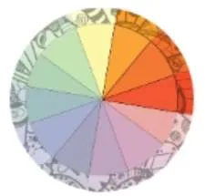
Complementary Colors
Complementary colors are any two colors that directly look at each other on the opposite ends of the color wheel. Such colors are red and green, blue and orange, etc. These colors enhance one another. You can find many examples in nature. Using these colors will give contrast to your page. If you want something to stand out in your drawing, then make sure to use some complementary colors!
The science: Complementary colors create maximum contrast because they share no common wavelengths of light. When placed next to each other, they appear more vibrant—a phenomenon called simultaneous contrast, discovered by chemist Michel Eugène Chevreul in 1839.
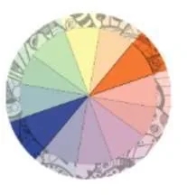
Natural examples:
Red berries on green foliage
Orange monarch butterflies on blue sky Purple flowers with yellow centers
Coloring tip: Never use complementary colors in equal amounts. The Impressionists discovered that a 70-30 or 80-20 ratio creates more pleasing results. Too much equality creates visual tension that tires the eye.
Triadic Colors
A triadic color scheme is three colors equally spaced out in the wheel, forming a triangle with even angles. Colors in this scheme usually give a vibrant feeling to your coloring page. You should be mindful when coloring with a triadic color scheme since it requires more balancing than the previous color schemes. Still, when done right, it adds life to your art!
Classic triadic combinations:
- Primary triad: Red, yellow, blue (think Superman’s costume)
- Secondary triad: Orange, green, purple (Halloween colors)
- Tertiary triads: Yellow-orange, blue-green, red-purple
Split Complementary Colors
The split complementary color scheme consists of three colors and is similar to the triadic coloring scheme. This one has two colors that are complementary to the third color that’s on the opposite side of the wheel. It creates a powerful contrast and can make your coloring page stand out.
Why designers love it: Split complementary offers high contrast like complementary schemes but with less tension. It’s forgiving for beginners because the colors naturally harmonize.
Example in practice: If you choose blue as your base, your split complements are yellow-orange and red-orange. This combination appears in Van Gogh’s “Café Terrace at Night”—the blue night sky against warm yellows and oranges of the café lights.
Tetradic Colors
The tetradic color scheme is four colors in two pairs of complementary colors. It works great if you want greater variety on your coloring page. You should be mindful of balancing between warm and cold colors; working with both pairs can be tricky. Making one color more dominant than the others can also bring good results.
Historical note: The Fauvist movement (1905-1908) pioneered bold tetradic schemes. Henri Matisse’s “The Dance” uses red-orange and blue-green with yellow-green and red-purple to create dynamic energy.
Practical approach: Choose one complementary pair as your main colors (using them 70% of the time) and the second pair as accents (30%). This prevents the “circus effect” of too many competing colors.
Square Tetradic Colors
The square tetradic scheme is like the tetradic colors with the difference that the two pairs are equally distanced from each other on the color wheel and form a square when connected. As with the tetradic scheme, you should try to balance warm and cold colors and find one color more dominant than the other ones.
Mathematical beauty: Square tetradic creates perfect 90-degree angles on the color wheel, offering maximum color diversity while maintaining mathematical harmony.
Success strategy: Think of it as two complementary pairs that need a hierarchy:
Dominant color (40%)
Supporting color (30%)
Accent color (20%)
Pop color (10%)
Real-world example: Many butterfly species use square tetradic schemes—the Monarch butterfly features orange (dominant), black (supporting), white (accent), and blue-reflected light (pop).
Quick Harmony Test
Before committing to coloring an entire page, try this professional technique: Create small color swatches in the margin of your page. Color tiny squares with your chosen scheme and step back. If the combination feels “right” from a distance, it will work beautifully up close.
Tints, Tones & Shades
When trying to make a color lighter or darker by adding white, gray, and black to your original color (hue), you’re doing either tinting, toning, or shading.
But even with just one pencil, you can get many different colors by changing the pressure or the number of layers. A red pencil, for example, can make a range of pink shades depending on how much pressure you apply or how many layers you add.
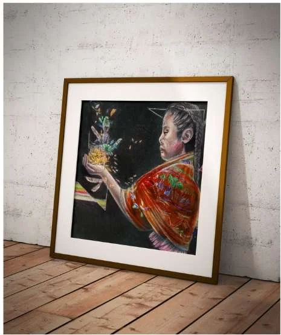
The Science Behind It: This pressure variation works because colored pencil pigments are suspended in a wax or oil binder. Light pressure deposits less pigment, allowing more paper to show through—effectively creating a tint without adding white. Studies show that professional artists can achieve up to 7 distinct values from a single pencil through pressure control alone.
Coloring with tints, shades, and tones adds depth and life to your coloring page. Coloring with a simple solid color and no variety doesn’t.
Wondering when to shade or tint your coloring book? Well, we would suggest always!
You shouldn’t leave an area in just one plain color. In larger sets of colored pencils, there are usually a few shades, tones, and tints already included.
If you don’t have those big sets of pencils and colors, that’s all right! You can achieve the same effect by coloring white, gray, or black on top of a base color.
Let’s look at how tints, tones, and shades fill in the color wheel:
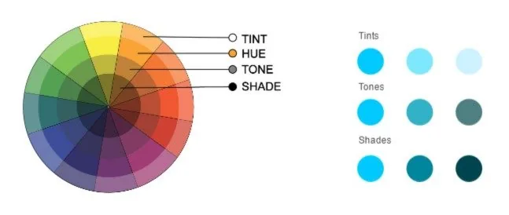
Tints are often called pastels. Tinting an object in your artwork will make it stand out from the surroundings. You can color a part of an element by tinting it to make it look like light is hitting it at an angle. Apply tinting on your coloring page to create a soft, calm, youthful mood.
Toning is an excellent way to give an object the impression of moving away from its surroundings. Apply toning to your color palette to make your artwork look realistic.
Adding shadows can be used for various effects, such as making an element look mysterious and strong. That’s called shading.
UNDERSTANDING THE TERMINOLOGY
Tints = Hue + White Tints are often called pastels. Tinting an object in your artwork will make it stand out from the surroundings. You can color a part of an element by tinting it to make it look like light is hitting it at an angle. Apply tinting on your coloring page to create a soft, calm, youthful mood.
Historical Note: The Rococo period (1720-1770) was known as the “Age of Tints,” where artists like François Boucher used predominantly tinted palettes to convey luxury and lightness. This technique influenced modern animation—Disney’s early princesses were colored primarily in tints to appear more youthful and innocent.
Practical Application: When coloring flowers, apply tints to petal edges where light naturally hits. Use heavier pressure for the base and gradually lighten toward the edges. This technique, called “graduated tinting,” makes flowers appear three-dimensional.
Tones = Hue + Gray Toning is an excellent way to give an object the impression of moving away from its surroundings. Apply toning to your color palette to make your artwork look realistic.
Why It Works: Our atmosphere contains particles that scatter light, making distant objects appear grayer—a phenomenon called atmospheric perspective. Leonardo da Vinci first documented this in his notebooks, noting that mountains appear progressively bluer and grayer with distance.
Professional Tip: Create custom grays by mixing complementary colors rather than using black. A purple-yellow gray feels warmer than a blue-orange gray. Master colorists rarely use pure gray from a tube or pencil—they build complex grays that harmonize with their palette.
Shades = Hue + Black Adding shadows can be used for various effects, such as making an element look mysterious and strong. That’s called shading.
THE VALUE SCALE METHOD
Professional artists use a 9-step value scale:
Pure white (paper)
Lightest tint (10% color)
Light tint (25% color)
Medium tint (40% color)
Pure hue (100% color)
Light shade (hue + 25% black)
Medium shade (hue + 50% black)
Dark shade (hue + 75% black)
Near black (hue + 90% black)
Exercise: Create value scales for your three favorite colors. This reference will transform your coloring accuracy.
PRACTICAL TECHNIQUES FOR COLORING BOOKS
The Three-Value Rule: Every object should have at least three values—light (tint), medium (pure hue or tone), and dark (shade). This creates instant dimension.
Light Source Mapping: Before coloring, mark a small sun symbol on your page to indicate light direction. All tints should face this direction, all shades should face away.
The 70-20-10 Formula:
70% mid-tones (your base color)
20% shades (for depth and grounding)
10% tints/highlights (for sparkle and dimension)
COMMON MISTAKES AND SOLUTIONS
Mistake: Using pure white for all highlights
Solution: Tint with the local color. A yellow flower’s highlight should be pale yellow, not white.
Mistake: Using black for all shadows
Solution: Use the complementary color mixed with your base color. Red objects look better with dark red-green shadows than black shadows.
Mistake: Applying values randomly
Solution: Follow the “form shadow” principle—shadows follow the object’s form. A sphere has curved shadows; a cube has angular shadows.
QUICK REFERENCE GUIDE
When coloring:
Sky: Use tints near horizon (atmospheric perspective)
Skin: Use tones for realistic flesh (pure colors look cartoonish)
Hair: Use full value range for dimension
Clothing: Use shades in folds, tints on raised areas
Nature: Green leaves need yellow-green tints and blue-green shades
Creating Your Color Palette
Now that you understand the basics of color theory and the color wheel, it’s time to select the colors for your next masterpiece: Choosing a color palette.
Sometimes professionals spend hours creating the perfect color palette. Picking the right one is not always easy, but don’t feel intimidated. While the color wheel is logical and invaluable for avoiding jarring color schemes, it’s not an exact science, and there is much room for creativity. Using the color wheel can be a lot of fun.
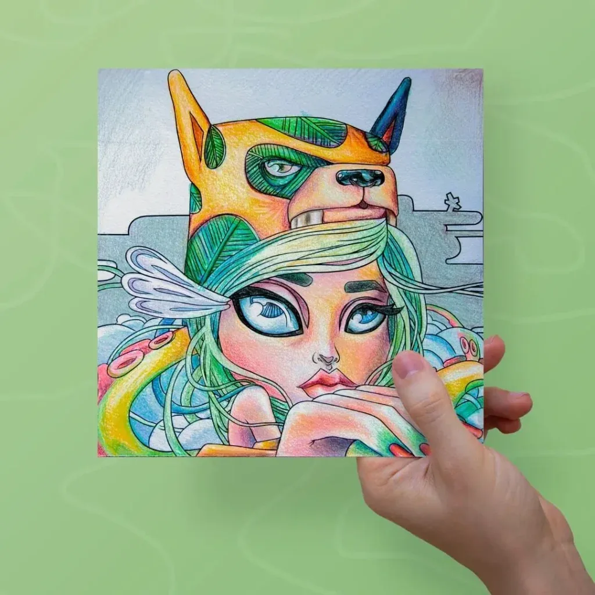
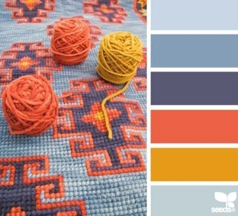
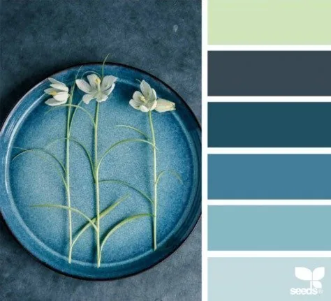
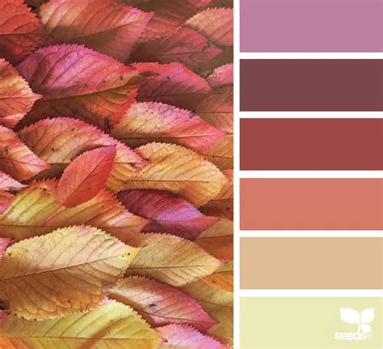
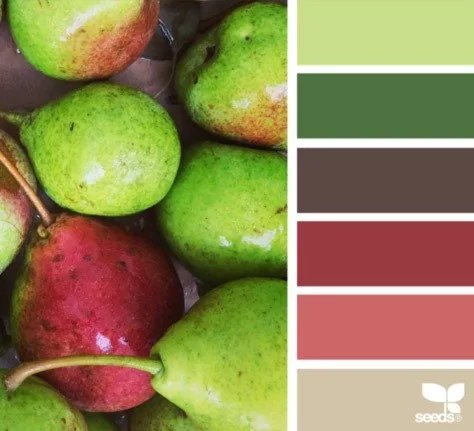
There are also color palette generators you can find online. With a few clicks, you can find the right colors for your next coloring page!
But if you decide to make your palette from scratch, we are here to help you, too. Before choosing the colors for your palette, ask yourself: What mood do you want to convey? Is your coloring page to be cheerful, gloomy, energetic, romantic, or peaceful?
Different colors evoke different emotions. You can transfer your emotions to the page by choosing the colors that match them, too. Are you feeling blue? Or are you feeling purple?
THE PSYCHOLOGY BEHIND COLOR CHOICES
Research from the Institute for Color Research shows:
Red palettes increase heart rate by 10-12% (perfect for action scenes)
Blue palettes lower blood pressure and create calm (ideal for peaceful landscapes)
Green palettes reduce eye strain by up to 20% (excellent for detailed work)
Purple palettes stimulate problem-solving areas of the brain (great for fantasy themes)
Here are three methods to choose your color palette:
METHOD A: KEEP IT SIMPLE
Choose three colors from the 12-point color wheel to create your “base” palette:
• Choose one primary color that you will use on most of the coloring page. This color will set the tone for the colored-in design as a whole.
• Choose a secondary color to back up the main color. This color should either be next to the primary color on the color wheel for a calming effect or directly opposite from it for an energetic look.
• Select a third color to act as a highlight. This color should contrast with the first and second colors.
Real-World Example: The Swedish flag uses this exact method—blue (primary), yellow (contrasting secondary), and white (highlight). This simple palette has remained effective for over 400 years.
METHOD B: MIX IT UP A BIT
• Select three colors from one point of the color wheel: a basic color plus tints, tones, and shades.
• Add another three colors from a point that is at least three spaces away on the color wheel. The difference in colors will add visual interest to your color scheme while maintaining harmony and balance.
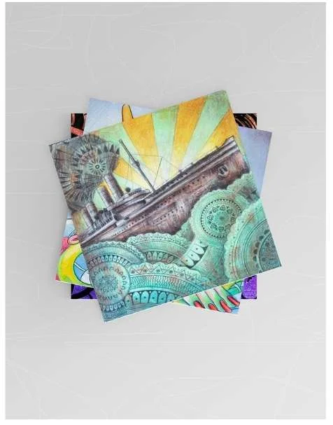
METHOD C: THE 60-30-10 RULE (INTERIOR DESIGNER’S SECRET)
This method, borrowed from interior design, creates foolproof palettes:
60% Dominant color (walls in a room, sky in a landscape)
30% Secondary color (furniture, main subjects)
10% Accent color (accessories, focal points)
Example: In Van Gogh’s “Starry Night”—70% blue (night sky), 20% yellow (stars and moon), 10% dark green/black (cypress tree).
Whether you use Method A, B, or C, you are not limited to just the colors you have chosen:
• One of the easiest ways to create a great-looking color scheme and to add impact is to use black, white, and gray on their own on some elements.
• Make Blends: Mix your selected colors to create an exciting range of colors that don’t clash.
Dive right in and remember: everything you try is a learning experience. There are no mistakes—only experience!
COLOR PALETTE TYPES
Here are a couple of color combinations you can consider using for your palette:
Monochromatic Palette
Monochromatic color schemes are different tones, hues, and tints within a single color. Since they are all based on the same color, they are the easiest color schemes to make. Monochromatic coloring is not complicated, but your page could look dull and repetitive if done incorrectly. (These tutorials will help you get it right.) Adding a neutral color, such as white, gray, or black, might help to keep things interesting.
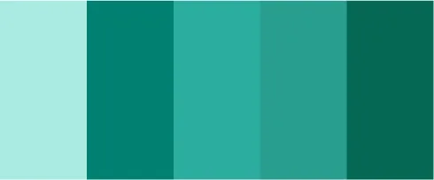
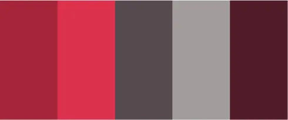
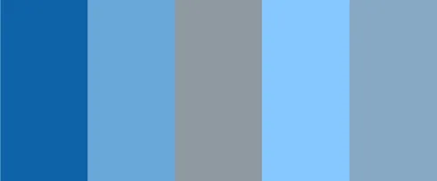
Famous Example: Picasso’s “Blue Period” (1901-1904) proved that monochromatic palettes could convey profound emotion. His use of 20+ shades of blue created depth without additional colors.
Complementary Palette
You can’t go wrong if you choose complementary colors for your palette. They go with each other already. This color combination is perfect if you want to add contrast to your coloring page. We recommend you choose one color as dominant and use its complementary color as a highlight for areas in your page you want to bring out.
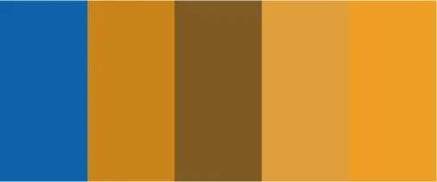
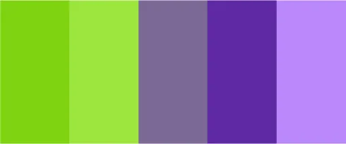
Nature’s Example: Christmas colors (red and green) work because holly berries naturally use this complementary scheme—proving that nature knows best!
Analogous Palette
Choosing colors close to each other on the color wheel is pleasing to the eye. Use it to evoke a calming mood in your coloring page.
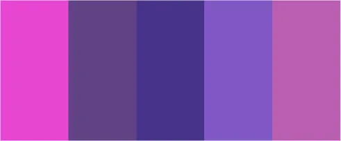
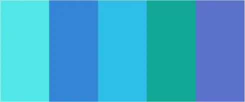
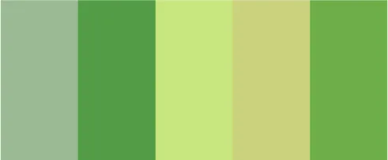
Seasonal Inspiration:
Spring: Yellow, yellow-green, green
Summer: Blue-green, blue, blue-purple
Autumn: Yellow-orange, orange, red-orange
Winter: Blue-purple, purple, red-purple
Pastel Palette
While light and dreamy, using pale and soft tints as your dominant colors can go a long way. Pastel colors can help your coloring page evoke calmness, warmth, and softness. Visit Our Pinterest Board for More Palette Ideas
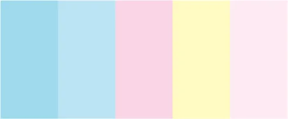
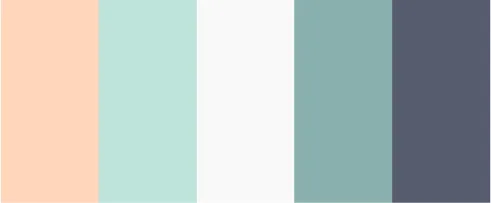
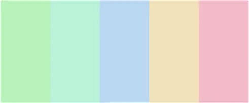
Modern Application: The “Millennial Pink” phenomenon (2016-2018) proved that pastel palettes aren’t just for nurseries—when combined with grays and deep accents, they create sophisticated, contemporary looks.
COMMON PALETTE MISTAKES AND FIXES
Mistake #1: Using all colors at full saturation
Fix: Follow the “Saturation Pyramid”—one fully saturated color, two medium saturation, three low saturation.
Mistake #2: Equal amounts of each color
Fix: Create hierarchy—no two colors should occupy equal space.
Mistake #3: Ignoring neutrals
Fix: Every palette needs at least one neutral to give the eye a rest.
QUICK PALETTE TESTING METHOD
Before committing to a full page:
Create 1-inch squares of each palette color them in your intended proportions Take a photo and convert to grayscale If the values look too similar, adjust your palette
This technique, used by theatrical lighting designers, ensures your palette works in both color and value.
YOUR PALETTE JOURNAL
Professional colorists keep palette journals. For each successful combination, note:
Colors used (brand and number)
Proportions (60-30-10, etc.)
Mood achieved
Time of day colored (lighting affects perception)
After 10 pages, you’ll have a personal reference guide worth its weight in gold!
Coloring with Pencils: Simple Tricks
Most people prefer to use colored pencils in their adult coloring books because pencils are precise. Colored pencils are easy to use and can mimic other mediums quite well.
They are available in a wide color range, more extensive than other mediums. They are clean to use; no need to worry about color bleeding out. And if we were to measure control and ability to blend, there’s no equal to them. We can go on!
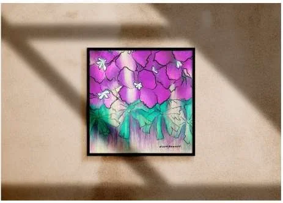
We’ll cover wonderful techniques with other mediums, but we will primarily focus on colored pencils in The Ultimate Coloring Tutorial for Your Adult Coloring Books. To get started with the technique portion of this tutorial, here are a few simple tricks to add to your practice when coloring with pencils:
- Hold your colored pencils farther from the point than you’d do with ballpoint pens or markers. This will give you finer control over pressure.
- When pressing the pencil harder, you’ll add more saturation to the color—this doesn’t darken it. If you want to darken a color, you use a slightly darker variant of the same color, gray, black, or even other colors, and color over it. (We go over it in detail later).
- Try to mix and blend the colors you have to get the hues, tones, and shades you want.
- You won’t always have a fitting pencil for every color you need for your coloring, but you can do wonders with what you have.
- Don’t rush with layering colors—depending on the paper thickness, getting a clean color without the white from the paper showing might take multiple layers.
- Avoid using black for shadows. Use darker shades of blues, browns, or purples instead. Use black for the darkest areas only.
- You can lighten a color using lighter shades of color or a white pencil over it—no need for erasing.
Okay, now that you know the fundamentals of coloring, you are ready. In the next lessons, we will cover beginner, intermediate, and advanced coloring techniques that would make your adult coloring book experience incredibly enjoyable.
Are you ready to discover your inner artist? I hope so!
See you in the next section!
What others say about our books
“The art is amazing. The book is sturdy and each page is thick and perforated, making it easy to remove and display.”
“Buy It for Everyone
I love this book so much I bought it for myself and one of my friends but now I feel like buying it for everyone I know, it’s fantastic. “
“WWOWWW Unbelievable gorgeous!!! So grateful for this! Thank you!!! We’re extremely happy. It’s our favorite piece”
Part 3 of 5
Beginner Techniques
Layering Colors
Let’s start with the critical technique you should learn to dominate: layering.
What is layering? The layering method involves putting one color on top of another to get the desired effect. When you layer colored pencils, you’re actually filling the microscopic valleys in the paper’s surface (called “tooth”) with pigment.
There are four basic methods to layer your coloring book: back-and-forth movement, hatching, cross-hatching, and circular motion.
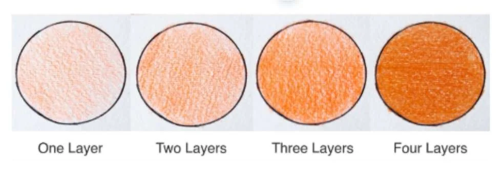
The Gradient Formula: Professional colorists use this ratio:
Lightest tint: 30% of highlighted area
Light mid-tone: 25% transition
True mid-tone: 25% main color
Dark mid-tone: 15% transition
Darkest shade: 5% deepest shadows
Color Gradients
Making colors flow naturally together is all about control, and mastering gradients will transform your coloring— whether you’re using pencils, markers, or any other medium. The good news is that the method builds on what you already learned with tints and shades, except now you’ll transition between different colors entirely. In this lesson, you’ll discover how to blend colors smoothly, which combinations create the most beautiful gradients, professional techniques to avoid muddy transitions, and quick fixes for common mistakes.
Types of Color Gradients
Before implementing this technique, let’s understand the four basic gradient types. They are:
- Monochromatic Gradient: Light to dark within one color (what you learned last lesson)
- Analogous Gradient: Between neighboring colors on the color wheel (easiest to master)
- Complementary Gradient: Between opposite colors (most challenging but striking)
- Multi-hue Gradient: Through multiple colors in sequence (like a rainbow)
Helpful Gradient Techniques
Here are some helpful gradient techniques that would make your coloring page look professional:
- The Zigzag Method: Instead of straight strokes, use a gentle zigzag motion in the transition zone. This creates much more color mixing than straight strokes.
- The Circular Blend: Use small circular motions (about the size of a peppercorn) in the overlap zone. This technique creates the smoothest possible transitions.
- The Feather Technique: Lift your pencil gradually at the end of each stroke, like a bird’s feather touching water.
Practice this motion on scrap paper first—it makes a huge difference!
Easy Gradient Combinations to Try
These tried-and-true combinations work beautifully because the colors naturally flow into each other.
Sunset Gradient (Warm Colors):
Magenta → Red-Orange → Orange → Yellow-Orange → Yellow
Think of a spectacular sunset—deep pink sky fading to golden horizon.
Ocean Gradient (Cool Colors):
Purple → Blue-Purple → Blue → Blue-Green → Green
Perfect for water scenes or calming backgrounds.
Rainbow Gradient (Full Spectrum):
Red → Orange → Yellow → Green → Blue → Indigo → Violet
This one’s trickier because you’re jumping from warm to cool colors. The secret? Keep consistent 30% overlaps between every color—no cheating!
Blending Colors
Blending might seem a bit challenging when you first start coloring, but it becomes easier over time. When applying the blending technique, the rough lines between the different pigments and strokes are smoothed out.
Sure, it can be time-consuming (isn’t that the point, wink). You’ll be switching between several pencils, from different colors to tints, tones, or shades. Keep the reward in mind: a coloring page that has been blended looks way more appealing to the eye! It’s a piece of art!
There are different blending techniques. Some of them involve the use of additional supplies, and some of them do not. It’s essential to try out each method before applying it to your page.
We’ll share with you the best ways to blend colors in your coloring book.
Burnishing: A blending technique in which you use heavy pressure to “rub” layers of color together—it’s like a level-up to layering.
There are different types of burnishing:
Saturation Burnishing
Tonal Burnishing
Tonal Burnishing: The process is the same as saturation burnishing. The only difference is that you use a “toning color” instead of a neutral color.
Blending with Solvents: Solvents are liquids that melt the binders that hold the pigment together in colored pencils, giving the artwork a similar effect as watercolors. Using solvents is one of the best methods to get a smooth color. They eliminate pencil strokes, leaving you with a smooth surface.
Blending with Baby Oil: It’s an effortless technique—use cotton swabs to dab the baby oil over the colored surface to make the perfect finishing touch. Unlike solvents, baby oil is completely safe and toxic-free!
Blending with Rubbing Alcohol: The wax binders found in colored pencils are broken down into small pieces by rubbing alcohol. The pigments move around the surface and fill in white spaces seen through color. Using rubbing alcohol in your coloring page will create a pleasant, light blend.
One lesson every month
DON'T LOSE THIS TUTORIAL
One coloring lesson a month to turn you into an artist in 12 short months*
Part 4 of 5
Intermediate Techniques
Mixing Colors
Unlike paint that physically blends, colored pencils create new colors through “optical mixing”—your eye blends the tiny particles of different pigments. When you layer blue over yellow, your eye sees green, even though the pigments remain separate. This principle, discovered by French chemist Michel Eugène Chevreul in 1839, revolutionized how artists approach color.
The result you get depends on which color is dominant and which one is mixing. The dominant color—the one you use for your first layer—should be stronger than the mixing color. Add more layers of your first color and add the mixing color in only one layer.
The Mixing Formula:
Dominant color: 3-4 layers (70% of the mix)
Mixing color: 1-2 layers (20% of the mix)
Optional accent color: 1 light layer (10% of the mix)
For example, if we choose red as a dominant color and yellow as a mixing color, you’ll get a darker shade of orange that leans toward red. But here’s where it gets interesting—you can create dozens of orange variations:
Red (dominant) + Yellow = Red-orange
Yellow (dominant) + Red = Yellow-orange
Red + Yellow + White = Coral
Red + Yellow + Brown = Burnt orange
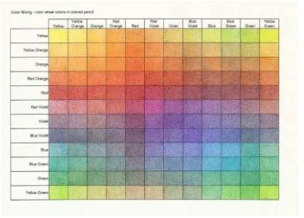
Understanding Color Temperature in Mixing
Mixing colors with the same undertones (temperature) is going to be easier and more predictable. For instance, mixing two warm colors creates harmonious results, while mixing warm and cool requires more finesse.
Warm + Warm = Natural blend (Red + Yellow = Orange)
Cool + Cool = Smooth blend (Blue + Purple = Indigo)
Warm + Cool = Neutral tones (Orange + Blue = Various browns/grays)
Creating Realistic Skin Tones
Professional portrait artists rarely use “peach” or “flesh” pencils alone. Instead, they layer:
- A base such as light pink or peach (2-3 layers)
- Some warmth, such as yellow or gold (1 light layer)
- A bit of life, such as red or orange (tiny touches on cheeks, lips)
- Some shadows, such as purple or blue (yes, really!)
- And some depth with brown or sienna (in creases and shadows)
The surprising addition of blue or purple mimics how real skin reflects the sky and surrounding colors—a technique the Impressionists discovered and modern makeup artists use daily.
Mixing Natural Greens
Store-bought greens often look artificial. Here are some formulas to create realistic foliage:
- Yellow + Blue = Basic green
- Yellow + Blue + Brown = Forest green
- Yellow + Blue + Red = Olive green
- Yellow + Blue + Black = Deep shadow green
Adding Depth Through Strategic Mixing
Here are the professional techniques we use in our coloring books:
- Reflected Color: Objects reflect colors from their surroundings. Add tiny amounts of:
- Blue from the sky on top of objects
- Green from the grass on the bottom of objects
- Warm colors from the sunset light on one side
- Analogous Color Mixing: Instead of coloring an apple solid red, use:
- Red as your base
- Red-orange in the light areas
- Red-purple in the shadows
- Unexpected Color Additions: Professional artists know these “weird” combinations work beautifully:
- Blue in skin tones (creates realistic shadows)
- Yellow in water (adds warmth and reflection)
- Purple in blonde hair (prevents brassiness)
- Green in red objects (deepens shadows naturally)
The Burnishing Connection
This melts the colors together optically, creating seamless new hues.
Here’s how you do it:
- First, layer your dominant color (3-4 light layers)
- Add your mixing color (1-2 layers)
- Burnish it with white or a colorless blender
- Then add a final light layer of dominant color if needed, and you are done!
Adding Texture
Adding texture to your coloring page does not follow a one-size-fits-all approach. There are so many different textures you can make with a single pencil.
Keep these stroke styles in mind that help you recreate textures:
- stripes or streaks
- flicks (long, short, straight, curved, curly, etc)
- stippling (dots)
- circles and scumbling (messy twisted spirals)
- zigzags (regimental or random)
- organic strokes (light touch downs that vary in size and shape)
- smooth blend (that’s a texture too!)
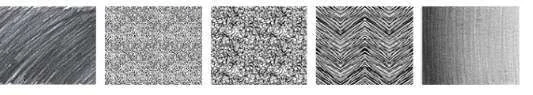
Splotching: The splotching technique means adding bits of colors here and there while leaving out areas to be
colored around it. While blending means layering colors together, splotching means keeping each color separate.
Once you build up a texture, you can shade a color over it to make shadows.
Erasing: Once you’ve layered your base color, go over it with an eraser, it will expose the layers underneath. We recommend using pencil erasers, kneaded rubber, or electric erasers for greater precision.
Solvents: You can even use a solvent to make soothing textures. Use a dabbing motion with a brush or a cotton swab to dissolve the pigment in some areas here and there, but make sure not to blend colors.
Monochromatic Coloring
Graphite pencils are the preferred tool for drawing. But here’s the little-known fact most people forget: you can also use them to color your coloring book! Now is the time to learn how to apply shading with a good ol’ pencil!
The hardest pencil in a typical set is a 9H, while the softest is a 9B.
The combination of letters and numbers written on each pencil’s end can be used to determine how hard or soft it is. Like this:
- H: Hard
- F: Fine Point
- HB: Hard Black
- B: Black
Hard pencils provide crisp, light, and clean lines, making them excellent for architectural drawings and sketches.
Because they don’t create smudges, they are great for outlines but terrible for blending with them.
Be careful when highlighting or shading on paper while using hard, pointed pencils because they can leave deep ridges that are challenging to erase.
Soft pencils provide dark, dull lines that are simple to blend. Soft pencils are easier to fill in blank spaces, blend, shade, and add texture since they deposit more graphite with less effort.
Mixing Mediums
Use markers, watercolors or crayons underneath colored pencils as a base layer, then use pencils or crayons to add shadows, highlights, and texture. This method removes all white areas underneath your pencil and speeds up your coloring time.
Choose your marker color first, and then choose a colored pencil that is the closest match. Keep in mind that some pencils will layer better than others. Quality sets will give you the freedom of layering light-colored pencils over dark markers. You can even use completely different colors for your base layer (also known as underpainting)—this will give you exciting results.
Removing Outlines
You can make the outlines in a coloring book a completely different color, make them less prominent, or white them out completely.
This is a fundamental trick you’ll want to pay close attention to if you want to get realistic-looking artwork in your coloring pages. The good news is that there is only one step to this technique.
All you need to do is trace the black lines of the illustration. For that, you can use a white gel pen or white ink.
What Others Say About Our Books
“The Ultimate Street Art Coloring Book is an amazing coloring book!!! The variety is mind-bending, the difficulty levels cover from easy to hard and everything in-between. The quality is premium across the board from front cover to the back.“
“Beautifully done! I just got my copies today and I’m sooooo amazed at the quality of the books! They’re beautifully done. I’m almost hesitant to color in them. Beautiful book for such an important cause!”
“This is the second adult coloring book I’ve purchased from Boundless Backer and I couldn’t be happier. What a great idea to put street art in an adult coloring book, it never gets old!”
Part 5 of 5
Advanced Techniques
Hey! Congrats on making it all the way to here. You are on your way to becoming an expert coloring artist, here are some useful practices professional artists rely on to create their masterpieces. You may want to incorporate them into your coloring journey:
- Erasers are your friends. Use an electric eraser, a pen eraser, or a white gel pen for white highlights and details.
Thank us later. - Leave sections uncolored. Sometimes coloring the whole page can be too much. Leaving out some sections will emphasize other ones.
- Use references. Observe photos, famous paintings, and other artworks as inspiration for your color palette or as references for shading.
- Customize your coloring page. There is plenty of space on some pages, so why not add your own elements?
You can make patterns or draw extra lines using fine-liner pens. - Try out other mediums. Gel pen, ballpoint pen, liners, and rapidograph pens (for monochromatic coloring)
- Invest in quality supplies. Using high-quality supplies can make a huge difference when it comes to art. If you want your artwork to look professional, now is the time to consider treating yourself to quality pencils.
Let’s look at some advanced techniques now.
The Pointillistic Technique
Pointillism, also known as stippling, is a coloring and blending method where you’re stippling dots of different shapes and sizes. Through them, you build colors, shades, and lights.
You may need patience to get into this coloring style, but the whole process is actually relaxing!
The pointillism style might be the cheapest technique there is since all you’ll need to make any color is only the set of primaries: red, yellow, and blue. Of course, you can use a wider variety of colored pencils or markers and make your illustration richer in color, but at the core, you’ll find primary colors most of the time.
Stippling is essentially a visual balance of positive and negative space on the page. The positive spaces should be the objects you’re drawing, while the negative spaces should be around those objects. The amount of realism and the general appearance of your coloring page will be determined by the amount of negative space on the paper.
If you want an object in your coloring page to appear closer or in the foreground, add as many details as possible to the area. Add shadows without much light space. For the objects that are further away, you’d want to make them less defined with the usage of negative space.
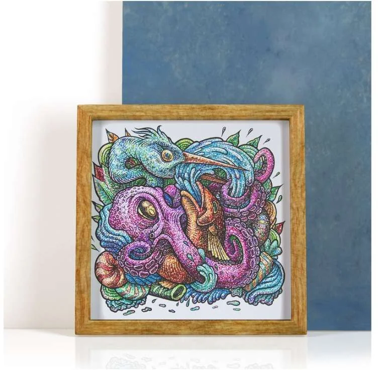
The Impressionistic Technique
The impressionistic style is based on small, unblended, and pronounced strokes or marks that are, in most cases, fractured. The strokes can be energetic and full of movement, or they can be gentle and harmonious.
Different strokes will give you different effects, so practice making a variety of them. They will come naturally to you. You can get outstanding results using crayons, too!
When it comes to harmony, use a colorful palette. Add as many different colors from that palette to the object on your coloring page. One effective way to achieve an impressionistic look is to layer cool and warm colors side by side.
Use many different colors to create shadow and light. Reach for both unmixed and mixed colors.
The Realistic Technique
To apply the realistic technique in your adult coloring book, you may want to focus on values over colors for a change. Look at objects as abstract shapes. Where are the lights? Where are the shadows? That’s the kind of thinking you should employ for this method. It’s beneficial to use reference photos for that.
When it comes to realism, adding texture is a must. Don’t forget to tone your colors as well—it’s essential to make your artwork more realistic.
Now would be a good time to remove the black outlines on your coloring page; revisit the intermediate techniques section of this coloring tutorial for that.
To effectively color using the realistic style, you must be able to understand how light affects three-dimensional objects. You’ve already learned how to make shadows, but now let’s bring your skills to the next level.
In any three-dimensional shape, you can find five different shading elements:
- Cast shadows — The darkest area of the object; hidden beneath the object and out of reach of light.
- Shadow edge — The shadow that follows the object’s shape; when light doesn’t reach directly, it’s on the opposite side from the lighting source.
- Halftone area — The actual object color, without shadows or light.
- Reflected area — The luminous edge along the object’s rim; it depicts the object’s volume.
- Full light — The area where light hits the object directly; the brightest part, also known as the highlight.
Practice making these different tones. Following the techniques in this tutorial may sound overwhelming, but they will become natural to you over time. You can color any adult coloring book like a pro once you’ve conquered them.
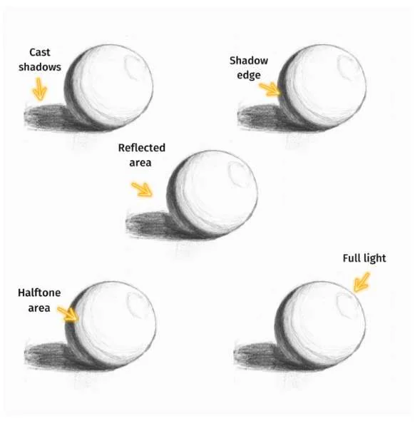
The Cartoonish Technique
In the cartoonish style, you’ll focus on achieving a flat, 2D effect. The most significant difference from realistic coloring is that you need to make harsh lines between colors. There should be no smooth transitions or gradients between light and shadow.
When it comes to the highlights, always put them on the edge of the object along the outlines. Highlights are usually white, but you can use other lighter versions of your base color, too. Sometimes it creates a more pronounced contrast with the rest of the colors.
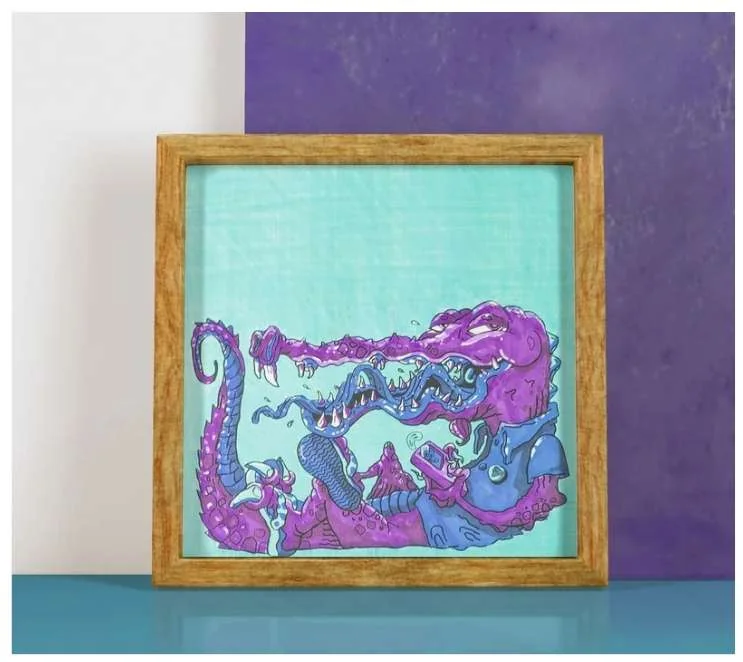
The Psychedelic Technique
If you’re a fan of abstract art and love detailed coloring pages, you will love this coloring style! The hippies of the 60s famously brought psychedelic art to the mainstream, and this style is still relevant today!
Have you ever looked through a kaleidoscope as a child? This is the right example of psychedelic art. Here are a few other examples to help you get inspired:
The psychedelic style has a few interesting characteristics that go particularly well in adult coloring books that we are sure you will love:
- You can create fantasy imagery
- Works really well with symmetricity
- Geometric shapes are often used
- Spiral patterns too
- The use of bright, intense colors is a must
- intricate and repetitive details
Color is an essential aspect of the psychedelic style. It’s all about a super-saturated palette that gives your coloring page an undoubtedly dramatic feel. It’s all about getting the “shock” effect. You can combine a bunch of vivid colors that you wouldn’t even dream of putting together any other time!
This style is straightforward; you don’t need tinting or shading. You can, however, use specific colors for shadows and others for highlights. They don’t even have to have the same undertone. Go wild with colors!
Find a coloring page in your books with the most detailed and repetitive illustrations, and give this style a go!
The Gold Leaf Technique
Gold leaf is a very thin decorative sheet that many artists use, mainly on paintings, but it can be applied in coloring books quite well, too!
It adds a hint of glamor to anything you apply it to, and combined with colored pencils, it will make your coloring pages positively stunning.
Use this technique in the areas you want to emphasize.
Here are a few details to keep in mind when purchasing gold leaf supplies:
- You will find two types of gold leaf—real and imitation.
- Real gold leaf is made of real gold, while imitation gold leaf is made of copper and zinc.
- Get the imitation gold leaf. (We are into coloring books, not restoring paintings.)
- Imitation gold leaf is available in a few variations of gold colors.
- It comes in sheets and flakes.
- Flakes will give you more texture, while sheets have a more even texture.
- You can try both and see what works best for you.
You will need a leaf adhesive (type of glue), a paintbrush, and a bowl to apply gold leaf.
It’s a straightforward process:
- Put the adhesive in a bowl.
- Dip the paintbrush in it.
- Lay it down on the areas you want to get a golden texture.
You don’t need to apply much adhesive; a thin layer will do the job. Don’t rush; practice precision. Switch to a smaller brush for detailed areas.
Once you’re done setting the adhesive, wait about 30 minutes for it to dry before adding the leaf—Trust us, it’s worth the wait!
You will see how easily gold leaf sticks to the paper. Take a sheet of gold leaf or a pile of gold flakes and use a brush to place them in pieces on the paper.
Some areas might end up more textured than others; that’s okay! It’s one of the features of this medium.
Once the glued area is fully covered, gently brush away the excess flakes. And you are done!
If you’re not satisfied with how some areas turned out, don’t stress. You can repeat the process over those areas.
Keep in mind that if your sheet tears or wrinkles when you pick it up, that’s normal. Gold leaf is fragile by nature. You can still use all those little pieces. Also, remember to clean the brushes you used to apply the adhesive. Dry glue can ruin them quickly.
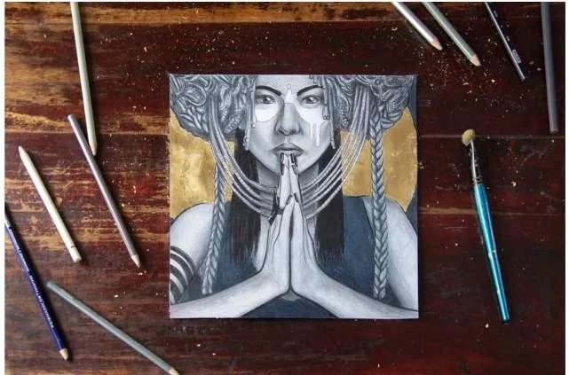
Street art book
The Ultimate Street Art Coloring Book
The Ultimate Street Art Coloring Book is designed to spark your creativity with the help of world-class muralists. The illustrations are bonafide black and white replicas of iconic murals from all around the globe. Legendary artists Kenny Scharf, Ron English, Lady Pink, D*Face, and one hundred other celebrated street artists provide an exciting coloring experience in 140 no-bleed through thick pages.
$25 – $50
The Ballpoint Pen Technique
Pens are everywhere and easy to use, and most importantly, you’ll find one virtually anywhere you go.
You can find ballpoint pens in various colors, too. There are even pens that contain a few different colors—usually blue, red, orange, purple, green, and black—all in one tool.
When you first start using the ballpoint pen for coloring, you might find it difficult to blend. It’s that challenge that makes it fun!
Make sure to try out colors before using them on the page. Use a different sheet to practice pressure first. The key is to keep the pressure light. You don’t want to spread too much ink at once because it will be harder to get an even color.
Build up colors slowly, just like we did with the colored pencils. Do you remember the hatching and cross-hatching technique we learned during the basic technique lessons? Use them now.
A ballpoint pen will give you thinner and more pronounced strokes. So, of course, there will be differences between these two techniques when applied with pens: Hatched strokes will, in most cases, be visible. This technique will give your coloring book page a unique look.
You’ll also need more time to blend colors visually. It can be quite a relaxing and enjoyable process! Did you ever spend hours drawing or coloring just with your pen in high school? This is why.
Another notable difference from colored pencils is that you can’t erase the ink from a ballpoint pen, so you have to preserve the paper’s white surface for the highlights you intend to have. Keep that in mind!
That said, make mistakes! Give yourself ample permission. Adult coloring books are all about learning to enjoy the process!
So, how do you start?
Color by hatching in one direction first—this will give you an initial light layer. Use denser strokes and colors in different directions in the areas where you want to increase saturation.
Try to create smooth transitions between tones. Make spaced strokes and apply lighter pressure toward the softer areas.
Unlike colored pencils, coloring with ballpoint pens means a limited number of colors are available for you to use. That means you must put some colors next to each other to get the right tone.
As a finishing touch, you can use black ink to add darker shadows in some areas and create dramatic contrasts.
See how we colored a page from the five-star rated The Ultimate Street Art Coloring Book, inspired by street artist Rush Bowles’ mural in Miami.
The Paper Mosaic Technique
First, you will need to prepare some sheets of paper in different colors, then a ruler, glue, scissors or a cutter knife, and a brush.
Let your inner child take you to beautiful fields of imagination.
Second, cut the sheets of paper into square pieces. The smaller pieces will be better, so we suggest you use the ruler and measure 3/16 of an inch for one square. Create hatch marks and connect them. Cut them with scissors or the cutter knife, and you are ready for the next step!
If you don’t have colored paper, use some other thin material or fabric or make your own colored paper by… well.. coloring them.
For the third step, use a brush and glue. Dip the brush in the glue and cover the area you want to do first. Since glue dries fast, doing the mosaic by sections is best.
After you set the glue on the paper, use a tiny bit of glue, so the squares stick to the other end of the brush. We suggest you arrange the pieces in a way that they follow the shape of an object.
Leave some space between the pieces; that’s precisely how you will make it look like a mosaic.
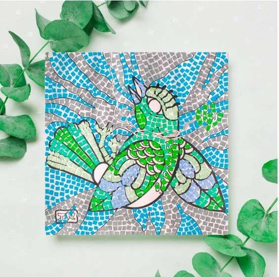
The 3D Illusion Technique
The 3D illusion coloring technique creates the perception of three-dimensional depth on a two-dimensional surface. It’s a technique that makes a flat image appear to have height, width, and depth, giving it a more realistic and visually engaging look.
Before we begin this journey, ensure that you select a coloring that lends itself well to the 3D effect. Intricate patterns and geometric shapes work wonders for this technique.
Select at least three colors for each element on your coloring page: one lighter, a medium shade, and a dark one. This contrast will help create the magical illusion that will bring your artwork to life.
Begin by applying the lighter color as the base. Cover the area evenly, making sure it has a solid foundation for the illusion we’re about to create. The base color application will add the 2D illusion effect first.
Now, take the darker color and identify where the shadows should be. Imagine where the light is coming from. Where is the light source? Apply the darker color on the opposite side. This simple trick adds instant depth.
The key to the 3D illusion is the blending of colors. Use the medium shade, the third color, to blend the lighter and darker colors. This creates a clear transition and enhances the illusion.
By strategically applying lighter and darker shades, we can simulate the play of light and shadow, making certain parts of the image appear to recede or come forward.
Here’s an idea: Make your artwork pop by adding contour lines. These are lines that follow the shape of your object, emphasizing its form. Keep these lines light and refined for the best effect.
For effective mastery of this technique, try applying the 3D illusion technique to different objects on your coloring page. Play with the viewpoints.
Ask yourself, what happens when the light source changes? How would that affect the objects on my coloring page? That’s how you create an entire 3D world on a page!
The Advanced Fade Out Stroke Technique
Select two colored pencils that complement each other, one lighter and one darker. The lighter one is for the base application, and the darker one is for the cool fade-out effect.
Start by gently and evenly applying the base color on your canvas with the lighter pencil. This sets up the foundation for the magic we’re about to create.
Ensure your base color is applied evenly. If needed, leave some blank spaces to make fade-out stroking easier.
Grab the well-sharpened dark pencil after applying the base color to create the fade-out effect. A sharp tip helps you create more defined strokes without compromising the surface.
Choose a point where you want to start coloring. Ideally, this will give your strokes a good flow and a clear direction.
Do you notice how the starting point of each stroke is the darkest, and the color gets lighter as you move away? This is ideally what the fade-out technique is all about.
The trick to the fade-out stroke technique is slowly easing the pressure with each stroke. Start firm, then lighten up as you move away from the start point of each stroke, creating a smooth gradient effect.
Each stroke isn’t just about adding color; it brings your art to life. The continuous layering of each fade-out stroke adds depth and dimension to your artwork.
Next, try fade-out strokes in different ways. You can do straight lines, crisscross lines, or even circles. Pay attention to how much pressure you use and how it changes the definition. Play with the pressure! Keep your hand relaxed, and let the magic flow with each stroke.
The Geometric Pattern Technique
Geometric patterns are composed of simple shapes, such as squares, circles, and triangles.
The first thing you will do is pick your colors. With geometric patterns, you can play with different color combos. Go bold or stick to a harmonious palette—your coloring page is your artistic playground!
Now, you will choose a pattern. If you’re new to geometric patterns, start with something simple, like a checkerboard or alternating triangles. As you gain confidence, try more intricate designs.
Precision is key. Stay within the pattern lines and maintain consistent colors. Clean edges and well-defined shapes work best with this technique. Apply colors uniformly to similar geometric patterns – it adds magic! Try replicating your coloring on both sides of a design for a balanced look.
Layer colors for a beautiful effect. Different colors can blend in the same shape, creating a stunning outcome.
Take your time – geometric pattern coloring is like solving a creative puzzle. No need to overthink colors; let your artistic instincts guide you. Experiment with different pencils for similar patterns—don’t be shy about using colors.
That’s how you make your artwork pop.
The Zen-Doodle Technique
Zen coloring keeps the “monkey mind” occupied and in the moment. Before we start, take a few deep breaths. Right now, it’s not about coloring the perfect page; it’s about learning to find deep relaxation through art.
Start with simple shapes. Begin by coloring similar simple shapes with your chosen color. Don’t worry about making them perfect. Let your hand move freely. Some of us have trouble with freedom; give yourself permission!
Next, add easy patterns. Fill in those shapes with easy patterns. Try dotting, striping, or swirling to color. You’re the boss of your doodle; forget about perfection. Make it as simple or as intricate as you like—the objective here is to get lost in the activity. Becoming completely absorbed in the sensory details of color and form induces a state of effortless presence known as “flow” that brings inner calm and reduces stress.
There is no need for heavy pressing. We are trying to avoid tension and let our bodies relax. Unlike other coloring techniques, where pressure is essential, it’s not crucial now.
Here’s an idea: Play around with light and dark shades of your coloring pencils. Some parts can be lighter, and others a bit darker. This gives your doodle depth and makes it interesting. How’s your breathing going? Slow and natural, I hope!
When coloring using the zen-doodle technique, embrace the white spaces. It helps balance your doodle. White spaces are like the quiet pauses in a beautiful song. Give yourself room.
Zen doodling is not about coloring. It’s about feeling good. As you continue to bring life to your doodle patterns, do so freely and relax, using the activity to stay present.